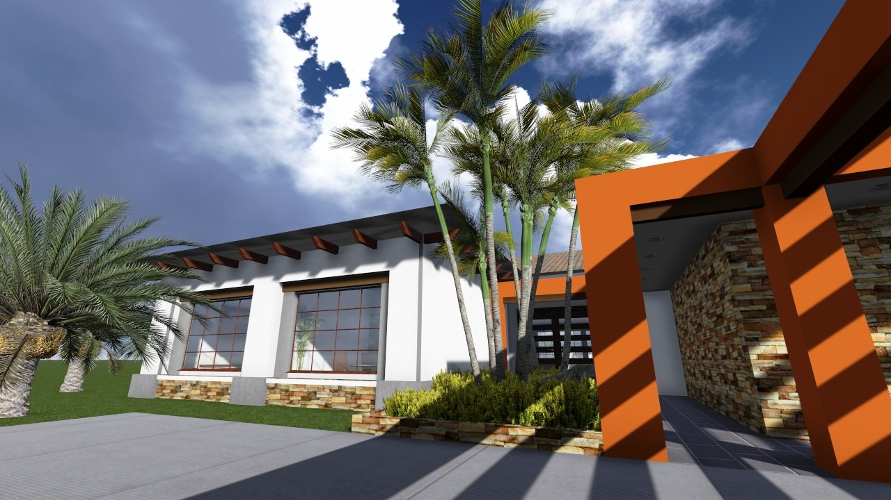
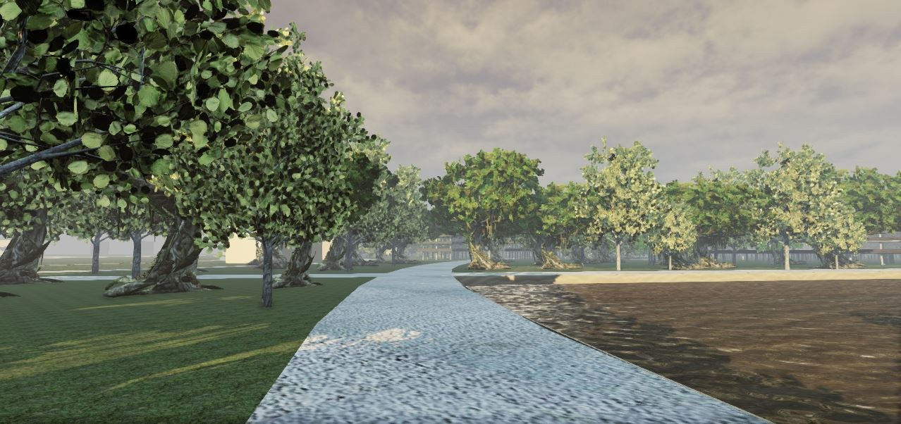

Project Gallery
Explore a visual selection of completed works and projects developed by Merconsult, with photographs and renders organized by project.
Completed Works
Completed works that form part of Merconsult’s built experience.
View projects ↓Terminal de Transporte Aguadulce
Transportation terminal with commercial premises in Aguadulce, along the Inter-American Highway.

Terminal de Transporte Aguadulce
Transportation terminal with commercial premises in Aguadulce, along the Inter-American Highway. · View 1 of 10 · Imagen 1 de 10

Terminal de Transporte Aguadulce
Transportation terminal with commercial premises in Aguadulce, along the Inter-American Highway. · View 2 of 10 · Imagen 2 de 10

Terminal de Transporte Aguadulce
Transportation terminal with commercial premises in Aguadulce, along the Inter-American Highway. · View 3 of 10 · Imagen 3 de 10

Terminal de Transporte Aguadulce
Transportation terminal with commercial premises in Aguadulce, along the Inter-American Highway. · View 4 of 10 · Imagen 4 de 10

Terminal de Transporte Aguadulce
Transportation terminal with commercial premises in Aguadulce, along the Inter-American Highway. · View 5 of 10 · Imagen 5 de 10

Terminal de Transporte Aguadulce
Transportation terminal with commercial premises in Aguadulce, along the Inter-American Highway. · View 6 of 10 · Imagen 6 de 10

Terminal de Transporte Aguadulce
Transportation terminal with commercial premises in Aguadulce, along the Inter-American Highway. · View 7 of 10 · Imagen 7 de 10

Terminal de Transporte Aguadulce
Transportation terminal with commercial premises in Aguadulce, along the Inter-American Highway. · View 8 of 10 · Imagen 8 de 10

Terminal de Transporte Aguadulce
Transportation terminal with commercial premises in Aguadulce, along the Inter-American Highway. · View 9 of 10 · Imagen 9 de 10

Terminal de Transporte Aguadulce
Transportation terminal with commercial premises in Aguadulce, along the Inter-American Highway. · View 10 of 10 · Imagen 10 de 10
Terminal de Santiago
Transportation terminal built in Santiago, Veraguas province.

Terminal de Santiago
Transportation terminal built in Santiago, Veraguas province. · View 1 of 8 · Imagen 1 de 8

Terminal de Santiago
Transportation terminal built in Santiago, Veraguas province. · View 2 of 8 · Imagen 2 de 8

Terminal de Santiago
Transportation terminal built in Santiago, Veraguas province. · View 3 of 8 · Imagen 3 de 8

Terminal de Santiago
Transportation terminal built in Santiago, Veraguas province. · View 4 of 8 · Imagen 4 de 8

Terminal de Santiago
Transportation terminal built in Santiago, Veraguas province. · View 5 of 8 · Imagen 5 de 8

Terminal de Santiago
Transportation terminal built in Santiago, Veraguas province. · View 6 of 8 · Imagen 6 de 8

Terminal de Santiago
Transportation terminal built in Santiago, Veraguas province. · View 7 of 8 · Imagen 7 de 8

Terminal de Santiago
Transportation terminal built in Santiago, Veraguas province. · View 8 of 8 · Imagen 8 de 8
Casa de Coronado
Completed residential construction in Coronado, Panama.

Casa de Coronado
Completed residential construction in Coronado, Panama. · View 1 of 3 · Imagen 1 de 3

Casa de Coronado
Completed residential construction in Coronado, Panama. · View 2 of 3 · Imagen 2 de 3

Casa de Coronado
Completed residential construction in Coronado, Panama. · View 3 of 3 · Imagen 3 de 3
Hospital Luis "Chicho" Fábrega
Hospital complex developed for specialized medical care.

Hospital Luis "Chicho" Fábrega
Hospital complex developed for specialized medical care. · View 1 of 4 · Imagen 1 de 4

Hospital Luis "Chicho" Fábrega
Hospital complex developed for specialized medical care. · View 2 of 4 · Imagen 2 de 4

Hospital Luis "Chicho" Fábrega
Hospital complex developed for specialized medical care. · View 3 of 4 · Imagen 3 de 4

Hospital Luis "Chicho" Fábrega
Hospital complex developed for specialized medical care. · View 4 of 4 · Imagen 4 de 4
Projects
Conceptual and developing projects that reflect Merconsult’s design and planning vision.
View completed works ↑Santa Rosa Truck Stop
Refueling and service stop for trucks and buses along the Inter-American Highway.

Santa Rosa Truck Stop
Refueling and service stop for trucks and buses along the Inter-American Highway. · View 1 of 8 · Imagen 1 de 8

Santa Rosa Truck Stop
Refueling and service stop for trucks and buses along the Inter-American Highway. · View 2 of 8 · Imagen 2 de 8

Santa Rosa Truck Stop
Refueling and service stop for trucks and buses along the Inter-American Highway. · View 3 of 8 · Imagen 3 de 8

Santa Rosa Truck Stop
Refueling and service stop for trucks and buses along the Inter-American Highway. · View 4 of 8 · Imagen 4 de 8

Santa Rosa Truck Stop
Refueling and service stop for trucks and buses along the Inter-American Highway. · View 5 of 8 · Imagen 5 de 8

Santa Rosa Truck Stop
Refueling and service stop for trucks and buses along the Inter-American Highway. · View 6 of 8 · Imagen 6 de 8

Santa Rosa Truck Stop
Refueling and service stop for trucks and buses along the Inter-American Highway. · View 7 of 8 · Imagen 7 de 8

Santa Rosa Truck Stop
Refueling and service stop for trucks and buses along the Inter-American Highway. · View 8 of 8 · Imagen 8 de 8
Terminal de David
Transportation terminal project for the city of David, Chiriquí province.

Terminal de David
Transportation terminal project for the city of David, Chiriquí province. · View 1 of 5 · Imagen 1 de 5

Terminal de David
Transportation terminal project for the city of David, Chiriquí province. · View 2 of 5 · Imagen 2 de 5

Terminal de David
Transportation terminal project for the city of David, Chiriquí province. · View 3 of 5 · Imagen 3 de 5

Terminal de David
Transportation terminal project for the city of David, Chiriquí province. · View 4 of 5 · Imagen 4 de 5

Terminal de David
Transportation terminal project for the city of David, Chiriquí province. · View 5 of 5 · Imagen 5 de 5
Urbanización Petaluna en Las Tablas
Petaluna residential project in Las Tablas.

Urbanización Petaluna en Las Tablas
Petaluna residential project in Las Tablas. · View 1 of 7 · Imagen 1 de 7

Urbanización Petaluna en Las Tablas
Petaluna residential project in Las Tablas. · View 2 of 7 · Imagen 2 de 7

Urbanización Petaluna en Las Tablas
Petaluna residential project in Las Tablas. · View 3 of 7 · Imagen 3 de 7

Urbanización Petaluna en Las Tablas
Petaluna residential project in Las Tablas. · View 4 of 7 · Imagen 4 de 7

Urbanización Petaluna en Las Tablas
Petaluna residential project in Las Tablas. · View 5 of 7 · Imagen 5 de 7

Urbanización Petaluna en Las Tablas
Petaluna residential project in Las Tablas. · View 6 of 7 · Imagen 6 de 7

Urbanización Petaluna en Las Tablas
Petaluna residential project in Las Tablas. · View 7 of 7 · Imagen 7 de 7
María Chiquita
Residential complex planned in María Chiquita.

María Chiquita
Residential complex planned in María Chiquita. · View 1 of 4 · Imagen 1 de 4

María Chiquita
Residential complex planned in María Chiquita. · View 2 of 4 · Imagen 2 de 4

María Chiquita
Residential complex planned in María Chiquita. · View 3 of 4 · Imagen 3 de 4

María Chiquita
Residential complex planned in María Chiquita. · View 4 of 4 · Imagen 4 de 4
Residencial de retiro en Coronado
Retirement-oriented residential development in Playa Coronado.

Residencial de retiro en Coronado
Retirement-oriented residential development in Playa Coronado. · View 1 of 4 · Imagen 1 de 4

Residencial de retiro en Coronado
Retirement-oriented residential development in Playa Coronado. · View 2 of 4 · Imagen 2 de 4

Residencial de retiro en Coronado
Retirement-oriented residential development in Playa Coronado. · View 3 of 4 · Imagen 3 de 4

Residencial de retiro en Coronado
Retirement-oriented residential development in Playa Coronado. · View 4 of 4 · Imagen 4 de 4
Enika Universidad
Conceptual project for an Ethnic University.

Enika Universidad
Conceptual project for an Ethnic University. · View 1 of 6 · Imagen 1 de 6

Enika Universidad
Conceptual project for an Ethnic University. · View 2 of 6 · Imagen 2 de 6

Enika Universidad
Conceptual project for an Ethnic University. · View 3 of 6 · Imagen 3 de 6

Enika Universidad
Conceptual project for an Ethnic University. · View 4 of 6 · Imagen 4 de 6

Enika Universidad
Conceptual project for an Ethnic University. · View 5 of 6 · Imagen 5 de 6

Enika Universidad
Conceptual project for an Ethnic University. · View 6 of 6 · Imagen 6 de 6